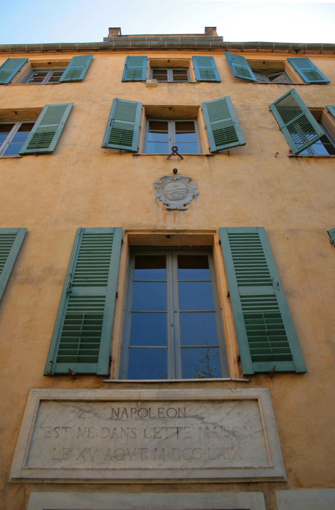
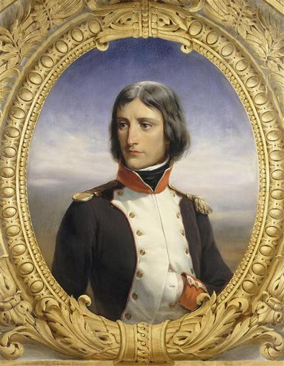
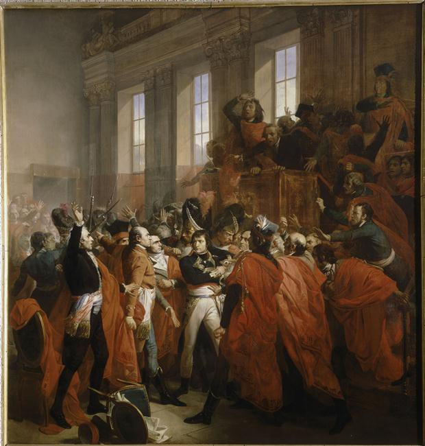
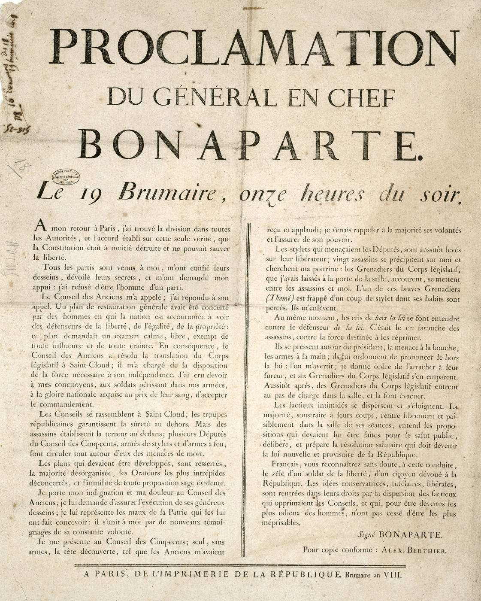
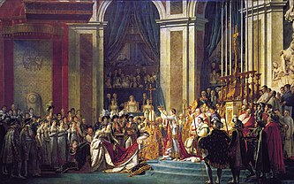
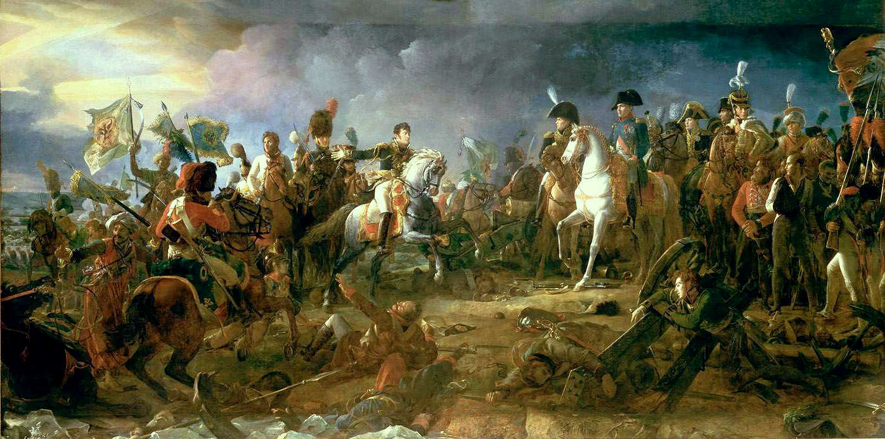
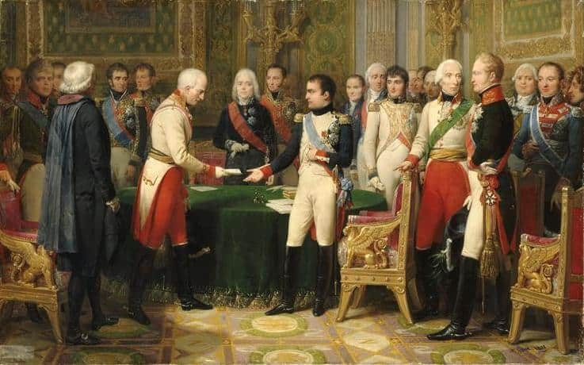
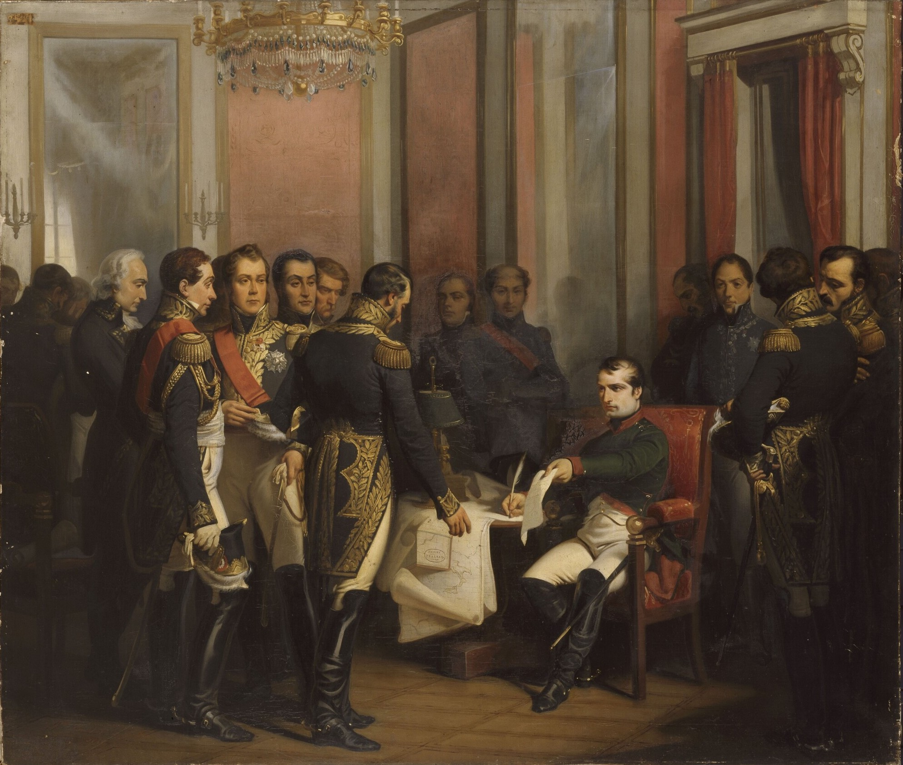
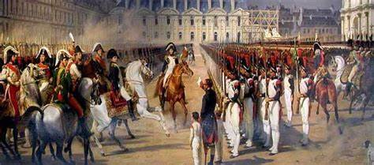
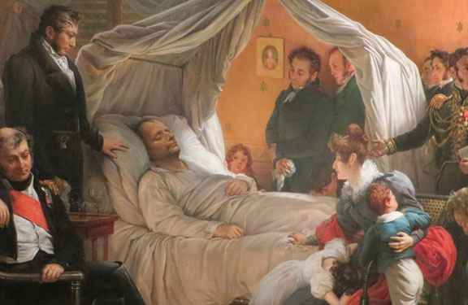

Napoléon Ier
Enfance et Adolescence

Louis Napeloene di Buonaparte, francisé en Napoléon Bonaparte, est né le 15 août 1769 à Ajaccio en Corse dans
la demeure familiale, rue Malerba. Il est le fils de Carlo Maria (Charles-Marie) Buonaparte, avocat au
Conseil supérieur de Corse et de Letizia (Laetitia) Ramolino. Ses parents lui donnent comme nourrice Camilla
Ilari, qu'il apellera même "maman" et dont il aura la plus grande affection (au point d'envisager, bien plus
tard, de lui offrir la Casa Bonaparte).
Les Bonaparte ne sont pas une famille riche. Dans ce milieu rural, les ressources matérielles de la
famille sont essentiellement fondées sur les récoltes et les échanges. À l'école, Bonaparte est un enfant
turbulent et bagarreur avec ses camarades, mais sera très vite reconnu comme étant un enfant avec de grandes
capacités, notamment pour le calcul.
Son temps libre, le cadet des Bonaparte le passe surtout avec le membre de sa famille dont il est le
plus proche, son frère ainé, Joseph. Le tempérament calme et placide de celui-ci est pourtant tout à
l'opposé du naturel ardent et batailleur de Napoléon, à qui son habitude de participer aux échauffourées qui
opposent les enfants des différents quartiers d'Ajaccio attire le surnom de "Ribulione", le perturbateur. On
l'aperçoit cepandant aussi, parfois, plus paisible, arpenter les bords de mer ou se recueillir dans ce qu'on
surnomme aujourd'hui la grotte de Napoléon, au lieu-dit « Casone ». Il apprécie également ses séjours aux
Milelli, une vaste propriété dont son père exploite les oliveraies comme locataire, avant d'en faire
l'acquisition en 1785.
Charles Bonaparte ayant fourni les preuves de noblesse de la famille, Napoléon est agréé par le
ministère de la Guerre pour entrer au collège royal et militaire de Thiron-Gardais, mais, à la suite de
défections, il est finalement admis à l'école royale militaire de Brienne-le-Château.
Il quitte
l'école de Brienne à l'âge de quinze ans, le 17 octobre 1784, et arrive cinq jours plus tard à Paris, où il
intègre la compagnie des cadets gentilshommes de l'école militaire de Paris. Le jeune Napoléon est très
impressionné par les magnifiques bâtiments de l'école et par les appartements.
Le 24 février 1785,
Charles Bonaparte meurt d'un cancer de l'estomac dans d'atroces souffrances ; le rôle de chef de la famille
échoit alors à l'aîné Joseph, mais Napoléon le juge d'un caractère trop faible pour diriger la famille.
Premiers Exploits

la Révolution éclate en 1789, le lieutenant Bonaparte a dix-neuf ans. Il est présent depuis le 15 juin 1788
au régiment de La Fère, alors à l'école royale d'artillerie à Auxonne dirigée par le maréchal de camp
Jean-Pierre du Teil. Ce dernier lui confie la répression de la première émeute de la faim qui éclate dans la
ville le 19 juillet 1789.
En 1791, le lieutenant Bonaparte répond à l'ouverture de l'armée russe aux émigrés français ordonnée
par la tsarine Catherine II. Son offre est rejetée car la tsarine, qui se méfie des républicains, est
également rebutée par le caractère prétentieux du lieutenant qui demande son intégration dans son armée avec
le grade de major (Майор/Mayor, c'est-à-dire « commandant » ou « chef de bataillon »).
Napoléon retourne à plusieurs reprises en Corse, où les luttes de clans avaient repris, les
paolistes soutenant la monarchie à l'anglaise, et les Bonaparte la Révolution. Napoléon se fait élire, dans
des circonstances floues (522 voix sur 492 inscrits), lieutenant-colonel en second du 2e bataillon de
volontaires de la Corse à Ajaccio le 1er avril 1792.
De retour à Paris, Bonaparte est nommé capitaine le 13 juillet 1792, dans le contexte de la guerre,
où l'on a besoin de soldats. De plus, il ne reste que 14 officiers sur 80 dans son régiment, le 4e
d'artillerie. La guerre prend de l'ampleur à l'automne 1792 avec la constitution d'une coalition des
monarchies européennes contre la toute nouvelle République française, coalition à laquelle participe le
royaume de Sardaigne.
Les désaccords entre Paoli et Bonaparte s'accentuent à la suite d'une lettre de Lucien Bonaparte à
la Convention pour dénoncer Paoli. Paoli l'apprend, et c'est la rupture entre lui et Bonaparte. La famille
de Napoléon, dont la maison a été mise à sac et incendiée le 24 mai 1793 par les paolistes, est contrainte
de se réfugier dans une autre résidence, leur petite ferme des Milelli. Quelque temps plus tard, le 11 juin
1793, ils décident de quitter l'île précipitamment à destination de la France continentale, Napoléon
déclarant « Ce pays n'est pas pour nous » en parlant de la Corse. Cela va faire naître chez Napoléon une
véritable rancune envers les Corses, qu'il évitera tout au long de sa vie. Il déclarera, quelques mois avant
sa mort en 1821 au maréchal Bertrand : « La Corse n'est pour la France qu'un inconvénient, une verrue
qu'elle a sur le visage ».

Le 29 juillet 1793, Bonaparte est à Beaucaire, et c'est à cette période qu'il rédige le fameux Souper
de Beaucaire, pamphlet politique pro-jacobin et anti-fédéraliste, dans lequel un militaire discute avec des
bourgeois, en leur disant qu'ils doivent se rallier à la Convention nationale. Ce pamphlet sera d'ailleurs
utilisé comme instrument de propagande de la Convention. Le 28 août 1793, alors que Marseille vient d'être
reprise par les jacobins et que la famille Bonaparte s'y installe, Toulon, tenue par les fédéralistes et les
royalistes, se livre aux troupes britanniques et espagnoles. L'arsenal et la flotte française sont livrés
aux Anglais
Bonaparte est capitaine d'artillerie lorsqu'il se présente au général Carteaux chargé de diriger le
siège de la ville. Celui-ci ne l'écoute pas et ne suit pas ses conseils. Bonaparte obtient, à la demande des
commissaires Augustin Robespierre et son compatriote Salicetti, le commandement de l'artillerie, avec le
grade de chef de bataillon. Bonaparte s'oppose aussi à Louis Fréron, qui, par sa mauvaise gestion des
affaires militaires, contribue au lancement de sa carrière. Il rencontre lors de ce siège de jeunes
officiers comme Marmont ou Victor et le sergent Junot qui accompagneront la suite de sa carrière.
L'artillerie est dirigée par Dommartin, mais Bonaparte est nommé commandant à sa place, le 19 octobre 1793.
Le 23 novembre, il parvient, avec ses hommes, à capturer le général anglais Charles O'Hara.
près l'échec d'un assaut contre Toulon, Napoléon soumet un plan d'attaque au général Dugommier, qui
a pris le commandement du siège. L'application de ce plan permet la reprise de la ville aux troupes
royalistes et britanniques le 18 décembre, après la prise du Petit Gibraltar
Après cette victoire, Bonaparte suscite l'admiration auprès de la Convention, mais aussi auprès de
la gent féminine. Il se met à fréquenter Désirée Clary, qui devient officiellement sa fiancée le 21 avril
1795 (2 floréal de l'an III).
Au mois de juillet 1795, il espère aller en Turquie à la demande du sultan pour devenir officier
instructeur. Cela échouera, il n'est pas retenu.
Le 15 septembre 1795, il est renvoyé brusquement — ou il démissionne, la cause reste encore floue.
Désormais sans affectation et sans solde, c'est une catastrophe pour lui. Mais Bonaparte ne tardera pas à
reparaître, un certain 5 octobre 1795, le 13 vendémiaire an IV.
Campagne d'Italie (1796-1797)

Le 2 mars 1796, Bonaparte avait obtenu sa promotion de général en chef de la petite armée d'Italie, appelée
en principe à ouvrir un simple front de diversion. Officier d'artillerie de formation, il innove à cette
époque dans l'utilisation de l'artillerie (canon de Gribeauval) comme force mobile d'appui des attaques
d'infanterie. Il sait motiver ses hommes et fait, sur le terrain qu'il avait reconnu en 1793-94, une
campagne d'exception qui reste étudiée dans toutes les écoles de guerre.
C'est la première grande campagne de Bonaparte, à laquelle il attachera beaucoup d'importance tout
au long de sa vie. Stendhal dira même qu'il s'agit de la période la plus brillante de la vie de Bonaparte.
L'armée que l'on confie à Bonaparte n'est pas censée être très importante ; il s'agit d'une campagne de
diversion, tandis que deux armées du Rhin bien plus puissantes contournent les Autrichiens par le nord. Il
remportera victoire sur victoire et réorganisera le nord de l'Italie.
En un peu plus d'un an, il bat cinq armées autrichiennes, fréquemment à un contre deux, et décide
seul du sort de la guerre, les armées françaises du Rhin étant battues par les Autrichiens qui doivent
affaiblir leurs troupes sur ce front pour envoyer des renforts en Italie. Il bat séparément quatre généraux
piémontais et autrichiens (dont Colli, von Beaulieu et Argenteau à Millesimo, Montenotte), après s'être
emparé du massif de l'Authion avec Masséna, là où les généraux Gaspard Jean-Baptiste Brunet et Jean Mathieu
Philibert Sérurier avaient échoué, à la baisse de Turini-Camp d'argent, et signe l'armistice de Cherasco
avec le royaume de Sardaigne.
Dans une deuxième phase, il bat une nouvelle armée autrichienne envoyée en renfort et commandée par
Sebottendorf à Lodi et Beaulieu à Borghetto. Le 15 mai 1796, le jeune Bonaparte entre dans Milan, à la tête
de son armée.
Dans une troisième phase organisée autour du siège de Mantoue, il bat deux nouvelles armées
autrichiennes commandées par Quasdanovich et Wurmser dans sept batailles, dont Castiglione et Roveredo.
Enfin, les renforts commandés par Alvinczy sont à nouveau battus au pont d'Arcole et à Rivoli.
Tout en organisant l'Italie en républiques sœurs sur le modèle de la République française, il marche
sur l'Autriche et signe seul les préliminaires de paix de Leoben. La rue qu'il habitait à Paris, qui
s'appelait rue Chantereine, fut rebaptisée rue de la Victoire, nom qu'elle a conservé à ce jour.
Campagne d'Egypte (1798-1801)

L'expédition d'Egypte a avant tout un but militaire et stratégique : affronter de façon indirecte la
Grande-Bretagne. Le Directoire, à la tête de la France, estime qu'il est difficile de l'attaquer de front et
de remporter la victoire. Une autre solution est alors trouvée, proposée par Talleyrand : empêcher les
Britanniques d'accéder à la route des Indes et de contrôler la Méditerranée en prenant l'Egypte.
Le 2 juillet 1798, Bonaparte débarque à Alexandrie avec son armée : commence alors l'expédition
d'Egypte. Par une proclamation adressée aux Egyptiens, il se pose en libérateur du peuple oppressé par les
Mamelouks et en ami du sultan ottoman, afin d'éviter que ce dernier n'entre en guerre contre la France. Une
fois la ville d'Alexandrie prise, Bonaparte en laisse le commandement à Kléber, fait installer la flotte
dans la rade d'Aboukir et se met en marche pour rejoindre le reste de l'armée. Le 8 juillet, celle-ci est
réunie à Demenhour et s'apprête à marcher vers Le Caire. Le 21 juillet a lieu la bataille des Pyramides,
première victoire de taille de Bonaparte, durant laquelle ses hommes repoussent les attaques des Mamelouks
et des Egyptiens. L'expédition connaît cependant des difficultés : les soldats de Bonaparte se trouvent en
terre inconnue et souffrent de la chaleur et de la soif. Au Caire, avant que les troupes françaises ne
livrent bataille, les notables, qui n'ont pas fuit la ville, se rendent pour éviter des combats meurtriers :
Bonaparte s'empare donc du Caire, la plus grande ville d'Egypte. Il cherche alors à mettre la flotte à
l’abri mais le fait trop tard : les Britanniques, ayant découvert la flotte dans la rade d'Aboukir,
l'attaquent et la détruisent lors de la bataille navale d'Aboukir menée par l'amiral Nelson le 1er août. Les
pertes sont importantes pour la France : 4 vaisseaux sont coulés et 9 sont pris par les Britanniques.
Napoléon décide de se rendre en Syrie afin de consolider son pouvoir en Egypte. Dans le même temps,
la sublime Porte a déclaré la guerre contre la France le 9 septembre, montrant ainsi que la tentative de
Bonaparte de dissocier le pouvoir des Mamelouks du pouvoir de l'Empire ottoman a échoué. Avec environ 13 000
hommes, Bonaparte entre en Syrie. La ville de Jaffa est prise en deux jours de combats.
En Egypte, Mourad Bey qui contrôle la Haute-Egypte, décide de descendre vers Le Caire en même temps que
les Britanniques menacent Aboukir et Alexandrie. Le 25 juillet 1799 a lieu la bataille terrestre d'Aboukir,
qui se solde par une victoire française. C'est alors que Bonaparte prend la décision de rentrer en France :
il considère en effet que son œuvre en Egypte est terminée et qu'il est auréolé des succès qu'il a
souhaités. De plus, il se rend compte du rôle qu'il peut jouer en France s'il réussit à s'emparer du
pouvoir. Le 23 août 1799, il transmet ses pouvoirs à Kléber.
Coup d'Etat et Consulat (1798-1801)

Arrivé dans la capitale, le général s'entretient avec Talleyrand, homme politique d'expérience et fin
connaisseur des forces en jeu. Le schéma du coup d'État du 18 Brumaire (9 novembre 1799) prévoit les opérations
suivantes : Bonaparte aura le commandement en chef de l'armée pour le maintien de l'ordre dans Paris et dans les
assemblées. On envisage de déplacer les assemblées au château de Saint-Cloud sous le prétexte d'un péril
jacobin. En effet, depuis 1789, les assemblées se trouvent toujours sous la menace de la population parisienne.
L'essentiel des événements se déroule le 19 brumaire à Saint-Cloud. Les révisionnistes avaient envisagé
une démission collective des cinq directeurs, mais les assemblées ont du retard car cette idée ne fait pas
l'unanimité ; Bonaparte s'impatiente et décide d'intervenir. Il tient un discours maladroit devant le Conseil
des Cinq-Cents, discours hué par les députés qui l'accusent de vouloir instaurer la dictature. Bonaparte est
alors contraint de quitter l'assemblée. Mais il prend rapidement la situation en main avec l'aide de son frère
Lucien qui préside les Cinq-Cents. Lucien évite que Napoléon soit mis en cause par les députés qui veulent voter
pour mettre hors-la-loi Bonaparte. Lucien retarde le vote et va chercher Murat, qui vient avec la troupe et met
de l'ordre dans les assemblées, disant que certains députés voulaient poignarder Bonaparte pour justifier une
intervention de l'armée.
Les représentations des députés sortant par les fenêtres et voulant poignarder Napoléon sont très répandues.
Bonaparte est de fait l'homme fort de la situation, qui fait basculer un coup d'État parlementaire en un coup
d'État militaire. Mais Bonaparte reste attaché aux formes juridiques et, dans la soirée du 19 brumaire, les
députés restent à Saint-Cloud pour voter la décision de nommer deux commissions pour préparer une nouvelle
constitution. On constate alors une volonté d'appuyer le régime sur le vote des représentants du peuple. Le 20
brumaire, les trois consuls sont désignés : Bonaparte, Sieyès et Ducos. C'est le début du Consulat.

La Constitution de l’an VIII entre en vigueur le 25 décembre 1799. Bonaparte établit la Constitution
sous des apparences démocratiques, mais organise un pouvoir autocratique. Toutes les évolutions du régime ne
feront qu’accentuer le caractère autocratique du pouvoir.
Le pouvoir législatif est divisé en trois assemblées (tricamérisme) :
- le Tribunat discute les lois sans les voter ;
- le Corps législatif (ou « Corps des muets ») adopte ou rejette les lois ;
- le Sénat conservateur est chargé de vérifier que la loi est conforme à la constitution.
La préparation de la loi appartient à l'exécutif, par le biais du Conseil d’État, chargé de rédiger les
textes législatifs. Le pouvoir fonctionne de manière autoritaire, les procédés de démocratie semi-directe
(quelque peu fictive) sont soigneusement organisés et contrôlés. Le consul corrige lui-même les résultats s’ils
ne sont pas satisfaisants.
En 1800, Bonaparte attaque et vainc l’archiduché d'Autriche une nouvelle fois. Battus à Marengo par Napoléon
et à Hohenlinden par Moreau, les Autrichiens doivent signer le traité de Lunéville le 9 février 1801, ce qui
amène les Britanniques à signer la paix d'Amiens le 25 mars 1802 (4 germinal an X, contresignée deux jours plus
tard). Si son pouvoir était fragile au lendemain de Brumaire, la victoire de Marengo et ses suites consolident
fortement la situation de Bonaparte.
Le 24 décembre 1800, alors que le Consul et sa famille étaient en route pour aller à l'opéra, ils sont
victimes d'une « machine infernale » (bombe) qui les attend rue Saint-Nicaise. Le cocher du Premier consul passe
au grand galop. La bombe explose trop tard et seules les vitres du véhicule sont soufflées. Sur place, en
revanche, c'est le carnage. On dénombre 22 morts et une centaine de blessés. Fouché, alors ministre de la
Police, réussit à prouver que l’attentat est l’œuvre des royalistes, dirigé par un certain François-Joseph
Carbon, alors que Bonaparte est persuadé d'avoir affaire aux jacobins.
En mars 1802, la paix d'Amiens met fin à la guerre entre la France et l'Angleterre.
Le premier Empire (1804-1815)

Napoléon se couronne empereur le 2 décembre 1804. À proprement parler, l'Empire naît à la demande du Sénat.
L'historien américain Steven Englund se rallie à l'opinion selon laquelle il s'agissait, initialement, de «
protéger » la République. Le Consulat abattu, l’ordre se serait effondré avec lui. L'Empire, lui, était une
institution scellant la pérennité des valeurs républicaines. Napoléon Bonaparte pouvait mourir : l'hérédité du
titre était censée protéger le pays des bouleversements et de la perte des acquis révolutionnaires. C’est ainsi
que les monnaies impériales portèrent la mention « Napoléon Empereur - République française » jusqu'en 1808. En
outre, une observatrice avisée de la mise en place du Consulat et de l’Empire, la comtesse de Rémusat, explique
comment des « hommes fatigués des troubles révolutionnaires » aient vu en Bonaparte celui qui les « sauverait
des dangers d’une anarchie tumultueuse » et leur apporterait « le repos sous la domination d’un maître habile,
que d’ailleurs la fortune semblait déterminée à seconder ».
En 1804, l’heure n’est donc pas encore aux vastes conquêtes, et, persuadé depuis longtemps que le seul
moyen d’obtenir une paix définitive est de neutraliser le Royaume-Uni, Napoléon met au point, avec l’amiral
Latouche-Tréville (qui mourra avant d’avoir pu l’exécuter), un plan visant à l’invasion du Royaume-Uni. Cette
ambition sombre définitivement à la bataille de Trafalgar, où la flotte franco-espagnole commandée par l’amiral
de Villeneuve est détruite par celle de l’amiral Nelson. Le Royaume-Uni y gagne la domination des mers pour le
siècle à venir.

En 1805, la Troisième Coalition se forme en Europe contre Napoléon. L’Empereur qui, à Boulogne, supervisait
les préparatifs en vue de l’invasion du Royaume-Uni, doit faire face à une guerre soudaine, et à l’autre bout de
l’Europe. Il mène une offensive immédiate, acheminant la Grande Armée en Autriche à marche forcée, et s’assure
une brillante victoire contre l’Autriche et la Russie le 2 décembre 1805 à la bataille d’Austerlitz, dite «
bataille des Trois-Empereurs ».
En 1806, la Prusse provoque un nouveau conflit. La campagne que mène Napoléon (« l’Esprit en marche », selon
Hegel) est impressionnante de rapidité : il balaie l’armée prussienne à la bataille d'Iéna (doublée de la
victoire de Davout à Auerstaedt où, avec 30 000 hommes, le Maréchal Davout bat les 63 500 Prussiens qui
l'assaillent). L’année suivante, Napoléon traverse la Pologne, remporte une victoire sur les Russes à Friedland
et finit par signer, à Tilsit, au milieu du Niémen, au cours d'une entrevue dont la mise en scène est conçue
pour frapper les esprits, un traité avec le tsar Alexandre Ier, qui divise l’Europe entre les deux puissances.

Pourtant formé dans les écoles et par les maîtres de l’Ancien Régime, officier de l’armée royale,
Napoléon brise les anciennes conceptions militaires. Il ne s’agit plus pour lui de livrer une guerre de siège à
l’aide de 30 000 à 50 000 hommes, mais de rechercher la bataille décisive, engageant plus de 100 000 hommes s’il
le faut. Son objectif n'est pas de rester maître du champ de bataille, mais d’anéantir l’ennemi.
En 1808, Napoléon crée la noblesse d’Empire : bientôt ses maréchaux et généraux arboreront des titres de
comte d’Empire, prince de Neuchâtel, duc d’Auerstaedt, duc de Montebello, duc de Dantzig, duc d’Elchingen, roi
de Naples.
Du 27 septembre au 14 octobre 1808, Napoléon donne rendez-vous à Alexandre Ier à Erfurt, pour un nouveau
traité, afin qu’ils s’unissent contre l’empire d'Autriche qui menace de redéclarer la guerre à la France. Le
tsar refuse en préférant que ce traité soit établi dans le but de renouveler l’alliance qui s’était forgée entre
eux l’année précédente à Tilsit ; cela permet en fait à Napoléon de s’assurer encore plus longtemps de la
fidélité d’Alexandre. Mais c'est un échec car l'empereur s'aperçoit bientôt de la trahison de Talleyrand, qui
avait approché le tsar en lui conseillant de résister à Napoléon, même s'il était séduit.
Abdication et période des cents jours

En 1814 se forme une alliance entre le Royaume-Uni de Grande-Bretagne et d'Irlande, l'Empire russe, le
royaume de Prusse et l’empire d'Autriche. Malgré une série de victoires (batailles de Champaubert, Montmirail,
etc.) remportées par Napoléon à la tête d’une armée de jeunes recrues inexpérimentées (les « Marie-Louise »),
Paris tombe le 31 mars et les maréchaux forcent l'Empereur à abdiquer. L’intention de Napoléon était de le faire
en faveur de son fils (Napoléon II), mais les puissances alliées exigent une abdication inconditionnelle, qu'il
signe le 6 avril 1814.
Napoléon, qui pense que les alliés vont le séparer de l’impératrice Marie-Louise d'Autriche et de son
fils le roi de Rome, prend, dans la nuit du 12 au 13 avril, une dose du « poison de Condorcet » qui doit lui
permettre de se suicider. On a longtemps cru qu'il s'agissait d’opium dans un peu d’eau, le docteur Hillemand
pensant qu'il s'agit d'une absorption accidentelle trop grande d'opium destinée à calmer les douleurs
abdominales mais il semblerait que ce ne soit pas le cas. Les troubles et la nature du malaise de Napoléon ne
correspondent pas à une intoxication par l'opium. S'il choisit cette façon de mourir, c'est qu'il pense que son
corps sera par la suite exposé aux Français : il veut que sa garde reconnaisse le visage calme qu’elle lui a
toujours connu au milieu des batailles. Toujours est-il qu'il fait appeler Armand de Caulaincourt pour lui
dicter ses dernières volontés.
Il est, par la suite, déchu par le Sénat le 3 avril et exilé à l’île d’Elbe, selon le traité de
Fontainebleau signé le 11 avril, conservant le titre d’Empereur mais ne régnant que sur cette petite île. Son
convoi de Fontainebleau jusqu'à la Méditerranée avant son embarquement pour l'île d'Elbe passe par des villages
provençaux royalistes qui le conspuent, il risque d'être lynché à Orgon, ce qui l'oblige à se déguiser.

La fuite de Louis XVIII et le retour de Napoléon aux Tuileries le 20 mars 1815 marquent le début de la
période dite des Cent-Jours. Napoléon fait établir l’Acte additionnel aux Constitutions de l'Empire (rédigé le
22 avril 1815, approuvé le 1er juin). Une Chambre des représentants est élue.
Il rentre à l'Élysée le 21 juin 1815. Le 22, il abdique, déclarant par écrit : « Je m’offre en sacrifice
à la haine des ennemis de la France », et « je proclame mon fils, sous le nom de Napoléon II, empereur des
Français ». Devant le rapprochement de Paris des armées de la Septième Coalition, il quitte le palais le 25 pour
le château de Malmaison puis le 29 prend la route incognito en calèche isolée (habillé en bourgeois) pour
Rochefort, puis Fouras, où l'attendent deux frégates La Saale et La Méduse, souhaitant rejoindre les États-Unis.
Le 8 juillet, il embarque pour l'île d'Aix et monte à bord de La Saale.
Fin de vie

Napoléon est déporté et emprisonné par les Britanniques sur l'île Sainte-Hélène, commandée d'abord par
l'amiral Cockburn puis par Sir Hudson Lowe. L'Empereur est accompagné d'une petite troupe de fidèles, parmi
lesquels le grand maréchal du palais Bertrand, le comte de Las Cases, le général Montholon, et le général
Gourgaud. Il se consacre à l’écriture de ses mémoires qu'il dicte à Las Cases.
Il essaye aussi d'apprendre l'anglais ; il reçoit plusieurs visiteurs de passage à Sainte-Hélène,
qui est alors une escale importante pour tout navire contournant l'Afrique. Une fois installé à Longwood, il
évite de sortir car Lowe a donné l’ordre que l’empereur doit être partout sous garde.
Sur ce rocher, Napoléon se lie d'amitié avec une jeune Anglaise d'une quinzaine d'années, Betsy
Balcombe. Elle fait partie des derniers amis de l'Empereur, avant son retour en Angleterre en 1818. Elle
emporte avec elle une mèche de ses cheveux.
Dès cette époque, des escrocs usurpent l'identité de l'empereur et prétendent être de retour pour
reconquérir le pouvoir.
Napoléon meurt à l'âge de 51 ans, le 5 mai 1821.


{kind=link}